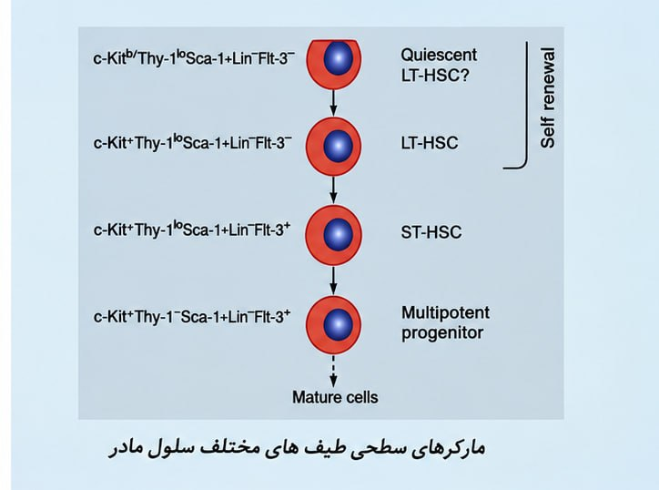
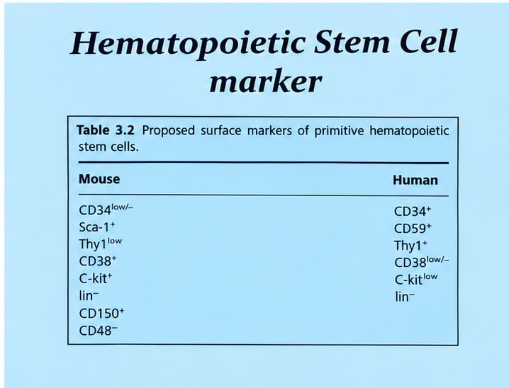
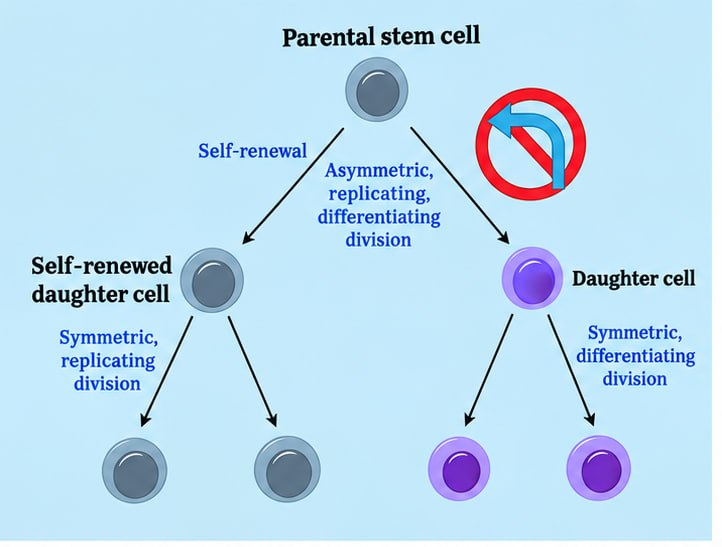
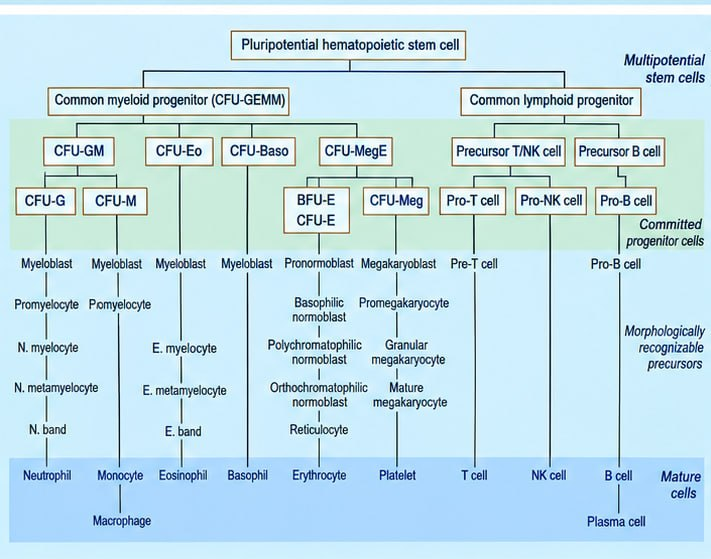

شبنم رضاپور
کسی که PDFها را راضی کرد محتوایشان را بیکموکاست لو بدهند.
این جزوه با استفاده از هوش مصنوعی تولید شده است. ممکن است شامل خطا یا برداشت نادرست باشد و نیازمند بررسی و بازبینی مجدد است.
خونسازی (hematopoiesis) فرایند تکثیر و تمایز سلولهای پیشساز در کانونهای خونساز است. در حال حاضر مغز استخوان کانون خونساز بدن است، مگر آنکه وضعیت پاتولوژیک ایجاد شود. برای درک هماتولوژی، شناخت ریزمحیط مغز استخوان، سلولهای بنیادی خونساز (HSCs)، مارکرهای آنها و مسیرهای تمایز سلولهای خونی اهمیت دارد. در این درس همچنین دربارهٔ نمونهگیری از مغز استخوان، مطالعه و توانمندیهای حرفهای و اجتماعی و چند کتاب پیشنهادی صحبت شده است.
تعریف — خونسازی (hematopoiesis) تکثیر و تمایز سلولهای پیشساز در کانونهای خونساز.
کانونهای خونساز در ابتدا کیسهٔ زرده، سپس کبد و بعد مغز استخوان هستند. در حال حاضر، مغز استخوان کانون خونساز بدن است، مگر آنکه وضعیت پاتولوژیک ایجاد شود. برای مثال، در بیماریهایی مانند تالاسمی ماژور، ممکن است کبد و طحال دوباره خونسازی کنند؛ یعنی چون مغز استخوان بهاندازهٔ کافی پاسخگو نیست، کبد دوباره خونسازی را آغاز میکند.
کانونهای خونساز ریزمحیط و شرایطی فراهم میکنند که به سلولها کمک میکند برای ایفای نقشی که بر عهده خواهند گرفت، رشد و تمایز پیدا کنند. در هماتولوژی باید فرایندها را از دید خونسازی در نظر گرفت: سلول مرکزی، سلولهای نوپا را میسازد و آنها نسل جدید سلولها هستند.
تفاوت اصلی خونسازی primitive و definitive در این توضیح، تعداد ردههای تولیدشده است: primitive فقط ردهٔ اریتروئیدی و definitive همهٔ ردهها را تولید میکند.
در تصویر ریزمحیط مغز استخوان دیده میشود. لایهٔ سلولی بنفشرنگ، استئوبلاست (osteoblast) است. استئوبلاست استخوانسازی میکند و ناحیهٔ سخت استخوان را ایجاد میکند.
عروق خارجشده از قلب شریان (artery) هستند و با نزدیکشدن به بافت به آرتریول (arteriole) تبدیل میشوند. در مسیر معمول، پس از آنها ونول (venule) و سپس وین (vein) قرار میگیرد. در مغز استخوان، شریانها وارد میشوند و به آرتریول تبدیل میشوند؛ اما بهجای آنکه به ونول و وین تبدیل شوند، فضای حوضچهمانند و گستردهای ایجاد میکنند که به آن سینوزوئید (sinusoid) میگویند. اندوتلیوم (endothelium) پوشانندهٔ رگ در اینجا کشیده و بسیار نازک میشود. بخشی که در تصویر با عنوان «blood vessels» مشخص شده، همان جایی است که اندوتلیوم کشیده و نازک شده است.
تعریف — سینوزوئید (sinusoid) فضای حوضچهمانند و گستردهای که در مغز استخوان، بهجای ادامهٔ معمول عروق به ونول و وین، ایجاد میشود.
فاصلهٔ استئوبلاستها تا این عروق کم است و خونسازی در سراسر این فضا اتفاق میافتد. روزانه حدود ۲ میلیارد گلبول قرمز، ۱ میلیارد گلبول سفید و ۱٫۵ میلیارد پلاکت تولید میشود؛ بنابراین، مهندسی این محیط اهمیت زیادی دارد.
در پیوند مغز استخوان، تمام مغز استخوان را برنمیدارند و به بیمار پیوند نمیزنند. سلولهای بنیادی خونساز (hematopoietic stem cells; HSCs) را جدا میکنند و داخل رگ بیمار تزریق میکنند. این سلولها به محل خود میروند؛ به این پدیده homing میگویند. همانطور که فرد صبح از خانه یا خوابگاه به دانشکده میآید و بعد از کلاس به خوابگاه برمیگردد، HSC نیز homing میکند و به محل خود میرود.
وقتی HSC به مغز استخوان میرسد، آنجا میماند و بین استئوبلاست و عروق قرار میگیرد. برای HSC، مغز استخوان مانند دانشکده است؛ عوامل مختلفی ترشح میشوند و آن را راهنمایی میکنند تا به سمت ردهٔ اریتروئیدی یا ردهٔ گلبول سفید برود.
HSCها در خون نیز گردش میکنند، اما برای خونسازی به مغز استخوان میآیند. میتوان HSCها را از خون جدا کرد، ولی سلولهای موجود در خون بهتنهایی در همانجا خونسازی نمیکنند؛ مانند دانشجویی که در خیابان است و هنوز به دانشکده نرسیده، درحالیکه کلاس در دانشکده برگزار میشود. HSCها پس از رسیدن به مغز استخوان، ابتدا به استئوبلاست متصل میشوند. به همین دلیل، این ناحیه را ریزمحیط (microenvironment) یا niche مغز استخوان مینامند. واژهٔ niche را گاهی «کنام» ترجمه میکنند.
استئوبلاست سلولی کشیده یا بیضیشکل است و هستهاش به یک گوشه رانده شده است. کار این سلول استخوانسازی است؛ اما همچنین اتصالهایی ایجاد میکند که HSC به آنها متصل شود و خونسازی انجام گیرد. در نبود استئوبلاست، خونسازی نیز انجام نمیشود.
استئوکلاست (osteoclast) چند هسته دارد و حاصل بههمپیوستن ماکروفاژهاست. ماکروفاژها با ماکروفاژهای مجاور ادغام میشوند، سیتوپلاسم مشترک پیدا میکنند و هستههایشان در یک سلول قرار میگیرد. در نتیجه، سلولی بزرگ با دو، سه یا چهار هسته و معمولاً دارای استطاله ایجاد میشود. استئوکلاستها در خون دیده نمیشوند، اما ممکن است در نمونهٔ مغز استخوان دیده شوند.
ریزمحیط مغز استخوان از دو بخش سلولی و غیرسلولی تشکیل شده است.
بخش سلولی ریزمحیط را سلولهای استرومایی (stromal cells) مینامند. این مجموعه شامل موارد زیر است:
این سلولها خودشان در خونسازی نقشی ندارند، اما از آن حمایت میکنند. برای مثال، فیبروبلاستها با ترشح پروتئینهایی مانند کلاژن (collagen)، فیبرونکتین (fibronectin) و «هومونکتین» داربستی برای قرارگیری HSC فراهم میکنند. HSC در فضای خالی قرار نمیگیرد، بلکه بستری پروتئینی به نام scaffold دارد که روی آن قرار میگیرد تا در محیط سهبعدی تحت تأثیر عوامل غیرسلولی باشد.
⚠ نام پروتئین نام شنیدهشده در transcript بهصورت «هومونکتین» است و از شواهد موجود نمیتوان نام علمی آن را با اطمینان تعیین کرد. وضعیت: نیازمند بررسی
بخشی از عوامل غیرسلولی مغز استخوان حاصل فعالیت سلولهای استرومایی است. این سلولها با ایجاد ماتریکس (matrix) و تولید فاکتورهای رشد (growth factors) در خونسازی نقش دارند. بعضی فاکتورهای رشد از منابع سلولی دیگر تأمین میشوند.
از جمله عوامل و ترکیبات مطرح در این محیط:
اریتروپویتین (erythropoietin; EPO) در کلیه و از سلولهای پریتوبولار (peritubular cells)، یعنی سلولهای اطراف لولههای کلیه، ترشح میشود.
در توضیح شفاهی، ابتدا به گیرندههایی در ناحیهٔ قوس آئورت اشاره شد که افت اکسیژن را حس میکنند. سپس توضیح داده شد که کلیه خون دریافت میکند و افت اکسیژن را حس میکند؛ در پی آن، سلولهای پریتوبولار اریتروپویتین ترشح میکنند. اریتروپویتین وارد خون میشود، به مغز استخوان میرسد و به آن پیام میدهد که خط تولید را به سمت تولید بیشتر گلبول قرمز ببرد، زیرا گلبول قرمز باید اکسیژنرسانی کند.
⚠ مسیر حسکردن افت اکسیژن در توضیح شفاهی، ابتدا به گیرندههای قوس آئورت و سپس به حسکردن اکسیژن توسط کلیه اشاره میشود؛ رابطهٔ دقیق این دو مرحله در transcript روشن نیست. وضعیت: نیازمند بررسی
در transcript گفته شد «۹۰» از خون آئورتی به کلیهها میرود؛ مقدار دقیق این عدد روشن نیست.
⚠ عدد مربوط به خونرسانی کلیه عدد شنیدهشده در جملهٔ مربوط به خون آئورتی که به کلیهها میرود «۹۰» است، اما واحد یا منظور دقیق آن از transcript قابل تشخیص نیست. وضعیت: نیازمند بررسی
اینتگرینها (integrins) و سلکتینها (selectins) در اتصال سلولها به یکدیگر نقش دارند. برای ایجاد اتصالهای محکم به اینتگرینها نیاز داریم و اتصال سلکتینها سستتر است. اتصال سست سلکتین را میتوان به زنگ تشبیه کرد: دست روی دکمهٔ زنگ قرار میگیرد، زنگ میزند و با برداشتن دست، اتصال قطع میشود. در مغز استخوان با هر دو نوع اتصال سروکار داریم و این ترکیبات میتوانند در راهکارهای درمانی نیز کاربرد داشته باشند.
برای مثال، استئوبلاستها برای نگهداشتن HSC در جای خود باید اتصال محکمی ایجاد کنند؛ اگر سلول را رها کنند، به عروق میرود. روی HSC گیرندهٔ CXCR4 وجود دارد که به CXCL12 متصل میشود. این اتصال به ماندن سلول در جای خود کمک میکند. این ترکیبات هورمون نیستند، بلکه ترکیبات شیمیایی پیامرسانی هستند که به سلول میچسبند و به آن پیام میدهند. در بعضی از این ترکیبات، دو سیستئین پشت سر هم قرار دارند و در بعضی دیگر، بین دو سیستئین یک یا چند اسیدآمینه وجود دارد. به برخی از این ترکیبات پیامرسان، کموکاین (chemokine) میگوییم. اتصال CXCR4 به CXCL12 به نگهداشتن HSC در مغز استخوان کمک میکند؛ این اتصالها محکماند و بهوسیلهٔ اینتگرینها برقرار میشوند.
اگر این اتصال را بشکنیم، HSC از مغز استخوان جدا میشود و وارد خون میشود. میتوان دارویی به فرد داد تا اتصالها شکسته شوند و سلولهای بنیادی خونساز وارد خون شوند. سپس سلولها را از خون جدا میکنند و برای پیوند به کار میبرند. در بیمارستان نمازی، در مسیر آزمایشگاه، اتاقی برای اهداکنندگانی وجود دارد که روز قبل دارو دریافت کردهاند تا اتصالها شکسته شوند و HSCها وارد خون شوند. سپس از خونشان نمونه میگیرند، سلولهای بنیادی را جدا میکنند و برای پیوند میبرند. در پاسخ به پرسشی دربارهٔ عوارض این کار برای اهداکننده و ساختهشدن دوبارهٔ سلولهای برداشتشده، گفته شد که سلولها دوباره ساخته میشوند. هماتوپوئزیس چشمهٔ جوشانی است که خشک نمیشود و میتوان این چشمه را به بیمار هدیه داد.
مغز استخوان کارخانهٔ تولید سلولهای خونی است و خطهای تولید مختلفی دارد: یک خط برای گلبول قرمز، یک خط برای پلاکت و خطهای دیگری برای ائوزینوفیل، بازوفیل و مونوسیت. اگر محصول این کارخانه درست ساخته نشود، بیماری ایجاد میشود. سرچشمهٔ کمخونیها و بدخیمیهای خونی همینجاست. یادگیری خوب هماتوپوئزیس (hematopoiesis) کمک میکند کمخونیها را درست توجیه و علتیابی کنیم و بیماریهای بدخیم خونی را بهتر بشناسیم.
در نوزاد، همهٔ استخوانها خونسازی میکنند و این وضعیت تا حدود ۲سالگی مطرح است، زیرا کانونهای خونساز هنوز منظم نشدهاند. این مسئله به معنی شدیدتر بودن خونسازی نیست. میتوان وضعیت را به صندلیهایی تشبیه کرد که اگر بههمریخته باشند، رفتوآمد دشوار میشود؛ اما وقتی منظم چیده شوند، فضا و ردیفهای بیشتری برای رفتوآمد ایجاد میشود. در مغز استخوان نیز کانونها بهتدریج منظم میشوند. گفته شد که این منظمشدن از یکسالگی به بعد آغاز میشود؛ بنابراین، «محدود شدن» کانونهای خونساز که در بعضی کتابها نوشته شده، تعبیر دقیقی نیست و کانونها در واقع منظم میشوند.
⚠ زمانبندی منظمشدن کانونهای خونساز در transcript هم به خونسازی همهٔ استخوانها تا حدود ۲سالگی اشاره شده و هم به شروع منظمشدن از یکسالگی؛ این دو زمانبندی عیناً حفظ شدهاند. وضعیت: نیازمند بررسی
پس از منظمشدن، استخوانهای پهن و کوتاه و نیز اپیفیز استخوانهای بلند خونسازی میکنند؛ برای مثال، اپیفیز فمور و استخوانی که در transcript «استخوان شانه» گفته شده است.
⚠ نام استخوان در مثال اپیفیز واژهٔ شنیدهشده «استخوان شانه» است، اما مشخص نیست منظور نام کدام استخوان بوده است. وضعیت: نیازمند بررسی
مغز استخوان یک بافت است. همانطور که نمونهای که برای آزمایش خون از رگ گرفته میشود نمایندهٔ خون است، نمونهٔ برداشتهشده از مغز استخوان نیز نمایندهٔ آن بافت در نظر گرفته میشود.

تصویر 1شکل، مارکرهای سطحی طیفهای مختلف سلول بنیادی و مراحل مختلف بلوغ را نشان میدهد. HSCها طیفی از سلولها را تشکیل میدهند؛ از سلولهای بسیار نابالغ تا سلولی که در آستانهٔ تبدیلشدن به یکی از ردههای خونی است. در شکل، نامهای ST-HSC، LT-HSC، quiescent LT-HSC و multipotent progenitor آمده و عنوان Self renewal نیز درج شده است.
مارکرهای درجشده در شکل بهصورت c-Kit*، Thy-1°، Sca-1+، Lin− و Flt-3* و در ترکیبهای مختلف کنار ST-HSC، LT-HSC و multipotent progenitor دیده میشوند. برای quiescent LT-HSC، عبارت «c-Kit®/Thy-1°Sca-1+Lin-Fit-3-» در متن استخراجشدهٔ اسلاید آمده است.
⚠ نمادهای مارکر در تصویر برخی نمادهای مثبت/منفی و نگارش مارکرها در متن استخراجشدهٔ اسلاید نامشخص یا مخدوشاند؛ ترکیبهای درجشده حفظ شدهاند و نباید از روی آنها نمادهای دقیق را با قطعیت نتیجه گرفت. وضعیت: نیازمند بررسی

تصویر 2عنوان جدول اسلاید «Proposed surface markers of primitive hematopoietic stem cells» است و دو ستون Mouse و Human دارد. در متن قابلخواندن جدول، این موارد دیده میشوند: CD34، Sca-1، CD59، Thy1، CD38، c-Kit، lin، CD150 و CD48. علامتهای مثبت، منفی یا سطح بیان کنار بعضی موارد در استخراج متن بهصورت ، !، “ یا نویسههای مخدوش آمدهاند. توالی استخراجشدهٔ جدول شامل «CD34!" / 034»، «Sca-1 / CD59*»، «Thy1*»، «CD38* / CD38“»، «C-kit* / c-kit!“»، «lin / lin-»، «cD150*» و «0485» است.
⚠ خوانایی جدول مارکرها OCR جدول در چند خانه مخدوش است و جفتکردن قطعی همهٔ مارکرها با ستون Mouse یا Human و نیز تعیین نمادهای دقیق مثبت/منفی از متن موجود ممکن نیست. وضعیت: نیازمند بررسی
برای شناسایی HSC میتوان گفت هر سلولی در مغز استخوان که CD34 مثبت باشد، در این مجموعه قرار میگیرد. CD یعنی cluster of differentiation؛ مجموعهای از پروتئینها که ممکن است روی غشا، در سیتوپلاسم یا در هسته باشند. در هماتولوژی، در این بحث بیشتر با مارکرهای غشایی سروکار داریم. یکی از مارکرهای سطحی مهم CD34 است. سلول CD34 مثبت را میتوان از خون جدا کرد و برای پیوند به کار برد. هنگام پیوند، HSC را از خون جدا میکنند و دوباره داخل خون فرد تزریق میکنند، زیرا homing دارد و راه مغز استخوان را بلد است. بنابراین، یکی از مارکرهای مهم آن CD34 است. مارکرهای دیگری مثل selectin و integrin نیز وجود دارند، اما برای شناسایی سلول از CD34 مثبت استفاده میشود.
سلول بسیار جوان CD34 مثبت است و با شروع تمایز، مارکرهای دیگری نیز ظاهر میشوند. در مسیر توضیحدادهشده:
بهتدریج مارکرهای دیگری به CD34 اضافه میشوند. در شکلهای اسلاید نیز ترکیبهای متفاوت c-Kit، Thy-1، Sca-1، Lin و Flt-3 برای سلولهای مختلف نشان داده شدهاند.
در شکل، سلولهای LT و ST نشان داده شدهاند. LT یعنی long-term و ST یعنی short-term. وقتی سلولی را به محیط آزمایشگاه میبریم و طول عمرش را بررسی میکنیم، سلول long-term این کارها را در مدت طولانیتری انجام میدهد؛ short-term دورهٔ کوتاهتری دارد و قرار است بهزودی به سمت یک رده برود. بسته به نیاز بدن، ممکن است به سمت ردهٔ گلبول قرمز یا پلاکت برود. هنگام پیوند مغز استخوان، هم سلولهای long-term و هم short-term را برمیدارند؛ برای جداکردن سلولها نیز به دنبال CD34 میگردند.
HSCها و سلولهای بنیادی دیگر را میتوان در آزمایشگاه شناسایی کرد. ترکیباتی مثل رنگ Hoechst و rhodamine را به کار میبرند؛ این سلولها رنگها را پس میزنند و جذب نمیکنند، بنابراین رنگ نمیگیرند. در transcript گفته شد که سلولهای CD34 مثبت را با این روش بررسی میکنند.
⚠ ارتباط CD34 و پسزدن رنگها transcript روشن نمیکند که توضیح پسزدن Hoechst و rhodamine دقیقاً به CD34 مثبت مربوط است یا به جمعیت دیگری از سلولها؛ هر دو نکته حفظ شدهاند. وضعیت: نیازمند بررسی
طبق توالی مارکرهای توضیحدادهشده در درس، CD34 مارکر سلول بسیار جوان است؛ سپس c-Kit (CD117)، Flt-3 و با پیشرفت تمایز CD38 مطرح میشوند.

تصویر 3HSC برای تولید سلولهای دیگر تقسیم میشود. هرگاه HSC بخواهد یکی از سلولها را تولید کند و وارد یکی از خطهای تولید شود، ابتدا تقسیم میتوز انجام میدهد: یک سلول را جای خودش میگذارد و سلول دیگر به سمت تمایز میرود. این تقسیم را self-renewal میگویند؛ یعنی سلول خودش را بازسازی میکند و یک سلول مثل خودش سر جای خود میگذارد، درحالیکه سلول دیگر تمایز پیدا میکند. به همین دلیل، چشمهٔ مغز استخوان خشک نمیشود و میتواند هر روز سلول تولید کند. HSC و بسیاری از progenitorها قابلیت self-renewal دارند.
در تقسیم میتوز، یک سلول مادر به دو سلول دختر شبیه به هم تبدیل میشود؛ این تقسیم، متقارن (symmetric) است. HSC میتواند تقسیم متقارن یا نامتقارن (asymmetric) داشته باشد:
شکل، تقسیم asymmetric، replicating و differentiating را در کنار self-renewal نشان میدهد و همچنین دو نوع تقسیم متقارنِ تکثیری (symmetric replicating division) و تمایزی (symmetric differentiating division) را نمایش میدهد. در نمودار، تقسیم نامتقارنِ تکثیری و تمایزی نیز درج شده است. این مطالب الفبای هماتولوژیاند و در ادامهٔ هماتولوژی بارها با آنها سروکار خواهید داشت.

تصویر 4شکل، HSCهای واردشده به ریزمحیط مغز استخوان و مسیرهای تمایز آنها به سلولهای خونی را نشان میدهد. در بالای نمودار «Pluripotential hematopoietic stem cell» و پس از آن «Multipotential stem cells» آمده است. این سلولها به دو شاخه میرسند:
در شاخهٔ میلوئیدی، نامهای CFU-GM، CFU-Eo، CFU-Baso و CFU-MegE در نمودار آمدهاند. در ادامهٔ این شاخهها، CFU-G، CFU-M، BFU-E و CFU-Meg دیده میشوند و سپس سلولهای متعهدشده (committed progenitor cells) و پیشسازهای مورفولوژیک قرار دارند.
در شاخهٔ لنفوئیدی:
⚠ جزئیات مسیرهای مورفولوژیک در نمودار بخشی از متن استخراجشدهٔ نمودار مخدوش است؛ نامهای قابلخواندن حفظ شدهاند، اما ترتیب چند پیشساز در شاخههای میلوئیدی از متن موجود بهطور کامل قابل بازسازی نیست. وضعیت: نیازمند بررسی
HSCهایی که وارد ریزمحیط مغز استخوان میشوند، انواع سلولهای خونی را میسازند. گلبول قرمز هسته و میتوکندری ندارد؛ در مقابل، نوتروفیل هستهٔ لوبوله و چند نوع گرانول دارد و با باکتریها مبارزه میکند. کار گلبول قرمز اکسیژنرسانی است. HSC قابلیت تبدیلشدن به انواع مختلف سلولهای خونی را دارد.
در پایان، در transcript عبارتی دربارهٔ دو لایهٔ «اندوزومی» و «مدوتونی» گفته شد، اما نامها و منظور دقیق از این دو لایه روشن نیست.
⚠ دو لایهٔ پایانی عبارت شنیدهشده «یک لایه اندوزومیه، یک لایه مدوتونیه» است و از محتوای موجود نمیتوان نام یا منظور دقیق لایهها را با اطمینان بازسازی کرد. وضعیت: نیازمند بررسی
در کنار توانمندی تخصصی، توانمندیهای روانی و اجتماعی نیز لازماند. دانشجو از فضای مدرسه، که برنامهها را برایش تنظیم میکردند، وارد دانشگاه شده و بهزودی فارغالتحصیل میشود. در کار حرفهای، گاهی علاوه بر گزارشی که برای بیمار مینویسیم، باید برای بیمار و همراهش نیز توضیح بدهیم و با آنها صحبت کنیم. اگر بنیاد فکری ضعیف باشد، انجام این کار دشوار میشود.
برای رسیدن به جایگاه یک فرد تحصیلکرده، باید از هدر دادن وقت برای چیزهای بیاهمیت پرهیز کرد و زمان را مدیریت کرد. کسی موفق میشود که مدیریت زمان را خودش به دست بگیرد. برای نمونه، میتوان در برنامهٔ روزانه دو ساعت مطالعهٔ غیردرسی، چهار ساعت مطالعهٔ درسی و بیست دقیقه خودارزیابی در نظر گرفت.
کتاب «هنر عشق ورزیدن» از اریک فروم (Erich Fromm) معرفی شد. اریک فروم روانپزشک بود و تجربههای سالها کار و دیدار با بیماران و افرادی را که به مشاوره نیاز داشتند، در این کتاب آورده است. این کتاب را باید با دقت خواند؛ جملههایش را خط کشید و تکرار کرد تا در ذهن، فکر و زبان جا بیفتد.
یکی از نکتههای مطرحشده در کتاب این است که گاهی در فرهنگ دربارهٔ غرور اشتباه میکنیم: میگوییم افراد باید غرور داشته باشند، اما نباید مغرور باشند. اگر دربارهٔ کسی بگوییم «خیلی مغرور است»، دربارهاش قضاوت کردهایم؛ کاری که درست نیست. دربارهٔ دوستداشتن نیز گفته میشود کسی میتواند دیگری را دوست داشته باشد که اول خودش را دوست داشته باشد؛ یعنی بتواند برای خودش چارچوب و حریم داشته باشد و اجازه ندهد هرکسی به روح و روان و جسمش آسیب بزند. این نکتهها برای پیگیری و توجه مطرح شدند. در فرهنگ ما نیز از این مطالب بسیار وجود دارد؛ معرفی کتاب به این معنا نیست که چون خودمان از این مطالب کم داریم باید سراغ آن برویم، بلکه این کتاب مجموعهٔ خوبی است که کمک میکند به این مطالب دسترسی پیدا کنیم.
کتاب دیگری که معرفی شد «تصویر دوریان گری» است. داستان دربارهٔ مرد بسیار زیبایی است که از او پرترهای میکشند. زندگیاش به قبل و بعد از آن پرتره تقسیم میشود. وقتی میبیند چه اثری روی پرتره گذاشته است، آرزو میکند پیر نشود و گذر زمان روی خودش اثر نگذارد؛ در عوض، سختیهای زندگی و پیامدهای تصمیمهایش، از جمله بار گناه، کمکم روی آن تصویر میماند.
با شناخت و محبت میتوان به گلهای شاهپسند محوطهٔ دانشکده نیز توجه کرد، رنگهای مختلفشان را دید و دوستشان داشت. دوستی و محبت را باید منتشر کرد. توانمندی خودمان و انتقال آرامش از راه دوستی و محبت مهم است. خداوند به بشر گفته است تا میتواند به یکدیگر محبت کند؛ آدمها نیازمند محبتاند. این مطالب بهعنوان نصیحت مطرح نشدند.
۱. طبق توضیح درس، خونسازی primitive در کیسهٔ زرده چه ویژگیای دارد؟
الف) فقط ردهٔ اریتروئیدی تولید میشود.
ب) همهٔ ردههای خونی تولید میشوند.
ج) فقط پلاکت تولید میشود.
د) سلولهای بنیادی AGM در آن به کبد مهاجرت میکنند.
پاسخ: الف
۲. کدام گزینه با توصیف درس از CXCR4 و CXCL12 سازگار است؟
الف) اتصال آنها به ماندن HSC در مغز استخوان کمک میکند.
ب) CXCR4 روی استئوکلاست قرار دارد و CXCL12 پلاکت میسازد.
ج) اتصال آنها باعث میشود HSC فقط در خون خونسازی کند.
د) این دو، مارکرهای مورد استفاده برای نمونهگیری از مغز استخواناند.
پاسخ: الف
۳. طبق مسیر مارکرهای بیانشده در درس، پس از c-Kit کدام مارکر مطرح میشود؟
الف) Flt-3
ب) CD48
ج) CD150
د) Thy1
پاسخ: الف
مثال در تالاسمی ماژور، چون مغز استخوان ممکن است بهاندازهٔ کافی پاسخگو نباشد، کبد و طحال میتوانند دوباره خونسازی کنند.
مثال برای توضیح homing، HSC به فردی تشبیه شده است که از خانه یا خوابگاه به دانشکده میآید و پس از کلاس به محل خود بازمیگردد؛ سلولی که هنوز به مغز استخوان نرسیده نیز مانند دانشجویی است که هنوز به دانشکده نرسیده است.
مثال اتصال سست سلکتین به زنگ تشبیه شده است: با قرارگرفتن دست روی دکمه، زنگ به صدا درمیآید و با برداشتن دست، اتصال قطع میشود.
مثال در توضیح نظمیافتن کانونهای خونساز، صندلیهای بههمریخته با صندلیهای منظم مقایسه شدهاند: نظمدادن به آنها رفتوآمد را آسانتر میکند و ردیفهای بیشتری برای رفتوآمد فراهم میآورد.
مثال برای برنامهٔ روزانه، دو ساعت مطالعهٔ غیردرسی، چهار ساعت مطالعهٔ درسی و بیست دقیقه خودارزیابی پیشنهاد شد.
| ویژگی | کیسهٔ زرده | ناحیهٔ AGM | کبد |
|---|---|---|---|
| نوع یا نقش خونسازیِ ذکرشده | primitive؛ فقط ردهٔ اریتروئیدی | تولید سلولهای بنیادی جدید برای تولید همهٔ ردهها؛ خونسازی این سلولها در این ناحیه بسیار کم است | سلولهای بنیادی AGM به آن مهاجرت میکنند؛ شرایط خونسازی در آن بهتر و قویتر است |
| رابطه با درونرگی یا خارجرگی | خونسازی درونرگی | — | با رسیدن خونسازی به کبد، فرایند خارجرگی میشود |
| عنوان | توضیح ارائهشده در درس |
|---|---|
| LT-HSC | long-term؛ فعالیتها را در مدت طولانیتری انجام میدهد |
| ST-HSC | short-term؛ دورهٔ کوتاهتری دارد و قرار است بهزودی به سمت یک رده برود |
| CD34 | مارکر مهمی برای شناسایی HSC و جداکردن آن از خون برای پیوند |
| c-Kit | پس از CD34 مثبت میشود؛ نام دیگر آن CD117 است |
| Flt-3 | پس از c-Kit در مسیر توضیحدادهشده مثبت میشود |
| CD38 | با پیشرفت تمایز ظاهر میشود |
| نوع تقسیم در متن | نتیجهٔ توصیفشده |
|---|---|
| متقارن (symmetric) | دو سلول دختر شبیه به هم |
| نامتقارن (asymmetric) | یک سلول مثل خودش حفظ میشود و سلول دیگر اندکی متمایزتر است |
| symmetric replicating division | نوعی تقسیم متقارن که در شکل نامگذاری شده است |
| symmetric differentiating division | نوعی تقسیم متقارن که در شکل نامگذاری شده است |
خونسازی؛ تکثیر و تمایز سلولهای پیشساز در کانونهای خونساز.
سلول بنیادی خونساز (hematopoietic stem cell).
دو نوع خونسازی که در درس بهترتیب با تولید فقط ردهٔ اریتروئیدی و تولید همهٔ ردهها توضیح داده شدند.
ناحیهٔ aorta-gonad-mesonephros که در آن سلولهای بنیادی جدید برای تولید همهٔ ردهها مطرح شدند.
حرکت HSC به محل خود در مغز استخوان پس از ورود به خون.
ریزمحیط مغز استخوانی که HSC در آن قرار میگیرد.
فضای حوضچهمانند و گستردهٔ عروقی در مغز استخوان.
سلولهای استرومایی؛ بخش سلولی ریزمحیط که از خونسازی حمایت میکند.
اریتروپویتین (erythropoietin)؛ در درس، ترشح آن از سلولهای پریتوبولار کلیه و اثرش بر افزایش تولید گلبول قرمز توضیح داده شد.
ترومبوپویتین (thrombopoietin)؛ فاکتور رشد پلاکت.
گیرنده و ترکیبی که اتصالشان به ماندن HSC در مغز استخوان کمک میکند.
مارکر سطحی مهمی که در درس برای شناسایی و جداسازی HSC مطرح شد.
بهترتیب سلولهای long-term و short-term؛ در درس بر تفاوت مدتزمان فعالیت آنها تأکید شد.
بازسازی سلول بنیادی و حفظ جمعیت آن هنگام تولید سلولهای متمایزتر.
⚠ نام پروتئین نام شنیدهشده بهصورت «هومونکتین» است و نام علمی آن از شواهد موجود قابل تعیین نیست. وضعیت: نیازمند بررسی
⚠ مسیر حسکردن افت اکسیژن توضیح شفاهی به گیرندههای قوس آئورت و نیز حسکردن افت اکسیژن توسط کلیه اشاره میکند، اما رابطهٔ دقیق این دو مرحله روشن نیست. وضعیت: نیازمند بررسی
⚠ عدد مربوط به خونرسانی کلیه عدد «۹۰» در جملهٔ مربوط به خون آئورتی که به کلیهها میرود شنیده شده است، اما واحد یا منظور دقیق آن مشخص نیست. وضعیت: نیازمند بررسی
⚠ زمانبندی منظمشدن کانونهای خونساز خونسازی همهٔ استخوانها تا حدود ۲سالگی و شروع منظمشدن کانونها از یکسالگی هر دو در transcript ذکر شدهاند. وضعیت: نیازمند بررسی
⚠ نام استخوان در مثال اپیفیز عبارت شنیدهشده «استخوان شانه» است، اما استخوان موردنظر مشخص نیست. وضعیت: نیازمند بررسی
⚠ نمادهای مارکر در تصویر بعضی نمادهای مثبت/منفی و نگارش مارکرها در متن استخراجشدهٔ شکل نامشخص یا مخدوشاند. وضعیت: نیازمند بررسی
⚠ خوانایی جدول مارکرها OCR چند خانهٔ جدول را مخدوش کرده است؛ جفتکردن قطعی همهٔ مارکرها با ستون Mouse یا Human و تعیین نمادهای دقیق مثبت/منفی ممکن نیست. وضعیت: نیازمند بررسی
⚠ ارتباط CD34 و پسزدن رنگها روشن نیست توضیح پسزدن Hoechst و rhodamine دقیقاً به CD34 مثبت مربوط است یا به جمعیت دیگری از سلولها. وضعیت: نیازمند بررسی
⚠ جزئیات مسیرهای مورفولوژیک در نمودار بخشی از متن استخراجشدهٔ نمودار مخدوش است و ترتیب چند پیشساز در شاخههای میلوئیدی بهطور کامل قابل بازسازی نیست. وضعیت: نیازمند بررسی
⚠ دو لایهٔ پایانی عبارت «یک لایه اندوزومیه، یک لایه مدوتونیه» شنیده شده است، اما نام یا منظور دقیق لایهها مشخص نیست. وضعیت: نیازمند بررسی